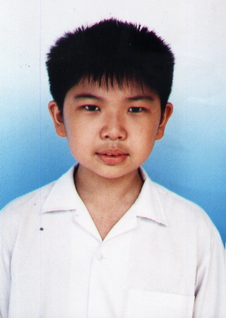

I was born on September 20 of 1985 at around 3 A. M. which I had read from my birth certificate. I am the youngest among the 5 siblings in our family. There are many changes that had happened in my life from childhood to adulthood. When I was a kid, I used to be a very happy-go-lucky person. I dreamed to become a physicists. I was once a headache to my parents. Because I hate being at school. When I was young, I used to think of school as an institution full of junks. And I don't care about my studies, but rather, I prioritize more on my relations with my classmates. I hate being at the 4 corners of a room with a strict kinder teacher. These were also the times, when I used to go outside the school to watch toys nearby. I also love to watch goldfish swimming in an aquarium in our kindergarden department. When I first studied at PCHS (Philippine Cultural High School) Annex in Caloocan, I immediately went to kinder, which means I didn't took nursery courses. In our school, students study whole day. Because in the morning, we study English. While in the afternoon, we study Chinese. One time, when I got late in my chinese class during kinder 2, I was hit by my teacher with a long meterstick in both of my hands. Of course, I cried. And I also remember that there was an attempt by a girl to kiss me, but unfortunately, she did. But my 4th sister rushed to the scene and send her to the office.
During my elementary days, I hate to be in a cream section during my first 2 years in my chinese class in elementary. Because you know that in a cream section, the people were arrogant and unreal. They feel they know everything about the world. You know, I failed in my Math subject there. During that period, I didn't know how to multiply nor to divide numbers. In addition, I got retained when I was in Grade 2. Because I failed in Science, Filipino, & Sibika. So it means that I should be a 3rd Year college student right now. But as I've reached Grade 3, there were bullies out there which made my life miserable and led me to become unfriendly. Not until the time when I'd reached Grade 6. That is the first time that I got a true friend. His name was Alvin Roman. He told me about the latests trend in computers, math, & Playstation. And also Alvin Arthur Sy, who is a Computer addict. I'm very grateful that I met people like them. I left Elementary with only a few friends.

On my high school days, this is the period where I started to mature and to study diligently. Like I've said earlier, I thought that school was merely a piece of junk & kinda hell for me because within 10 months I feel like a prisoner. Because it seems I can't get out of the school when I was a kinder up to the times when I was Grade 4. I was wondering... Why the guards won't allow me to go out? Maybe it's because I'm babyfaced. (Joke!) Now let's get back to business. During my high school days, I'd dreamed of becoming a physicists. When I'd reached first year high school. It was a culture shock. Because most of them were unfamiliar to me, but fortunately this time I've got many friends like Van Weily Choi, Jadz Jevz Lee, Nellwyn Chua, and many others. But my bestfriends through my high school years were Jacqueline Sue Cainglet & Joni Mae Lazaro. They are the ones who brighten my days in school with conversations about anything under the sun. During this year, I still didn't study well. My P. E. for the first 2 years is Badminton. And I'd shifted back to P. E. during 3rd & 4th Year respectively. The reason why I'd joined Badminton during my first 2 years is that Alvin Arthur urged me to join him. And without a second thought, I did joined him.

When I'd reached 3rd Year. It is the last year of my Chinese class. And this is the time that set the foundation for me to study well. There was a time that during my 1st Periodcal Examination that I studied the wrong subjects. That day, monday. The exams are Economics & Creative Writing. But instead, I studied Math & Filipino. Due to this, automatically I failed my exams. I hate myself for studying the wrong materials. After this, I decided resolutely to strive harder in the next grading period. And what happens is I managed to get an average grade of about 88% in Economics and "83%" in T. H. E. (a combination of Computer and Creative Writing). When I'd reached 4th Year, this is the year that I'd garnered fame in our class. Because I have managed to graduate with honors. And also I became the Quiz Bee contestant being the (Best in Social Studies) because I loved World History so much. During this year, I'd studied very hard because all I wanted is to defeat the 1st honor in our class, which is Jadz Jevz Lee. Although I didn't defeat him, it was a blessing in disguise for me to be the 2nd Honor in our class. And that is the first time that I feel that my parents were proud of me.
Now it's the college period. Where I get to meet new friends, new challenges to struggle with & during this years this will determine what my future career will be. To tell you frankly, I'd really wanted to enroll at UST. My course there was ECE (Electronics & Communications Engineering). I'd passed their entrance examination & interview. But I don't have the money to enroll there. Aside from that fact, there is no scholarship granted unless you're a valedictorian, salutatorian, sports, dance troupe, or a working scholar within the university. So I've no choice, but to enroll at UE Manila. Because of the Tan Yan Kee scholarship being offered in the university. I did my best and was able to get a scholarship. This lightens my parents' financial load. Anyway, my course in the University of the East is Bachelor of Science in Computer Science. During my first day in UE, it was an absolute culture shock. Because I get to see new faces, new professors, new environment, and new course to deal with. Many of my classmates thought that I was a foreigner not capable of speaking Filipino. But as always, first impressions are not always meant to last. At first, I had diffculty dealing with them. Some of my closest classmates are Mark Roger Amante, Hanna May Cedro, Argel Joseph Castillo and Shyrmay Dumago. Regarding the subjects, at first it was very strange. But when you learn to love it, everything will go on well. And in this course you must be a math lover or else you can't appreciate it. During a year's time studying in UE, I learned that Filipinos are friendly and warm. And maybe God has destined me to took up Computer Science over ECE because it's for my own good.
Currently, I'm studying Programming Languages so that I could become a good Programmer someday. Because in everything there is no easy way out. You must live with it so that you can enjoy what you're doing. Due to the Tan Yan Kee scholarship grant, I would continuously try my best so that I would get a better job in the future and also be of help to my family. Also to be useful citizen to my community and country. In this economic hard times, I have to strive harder in order to secure a better future or else I have to go abroad for a better paying job and earn more money so that I can improve my families economic standing as well as a stable standing in life.